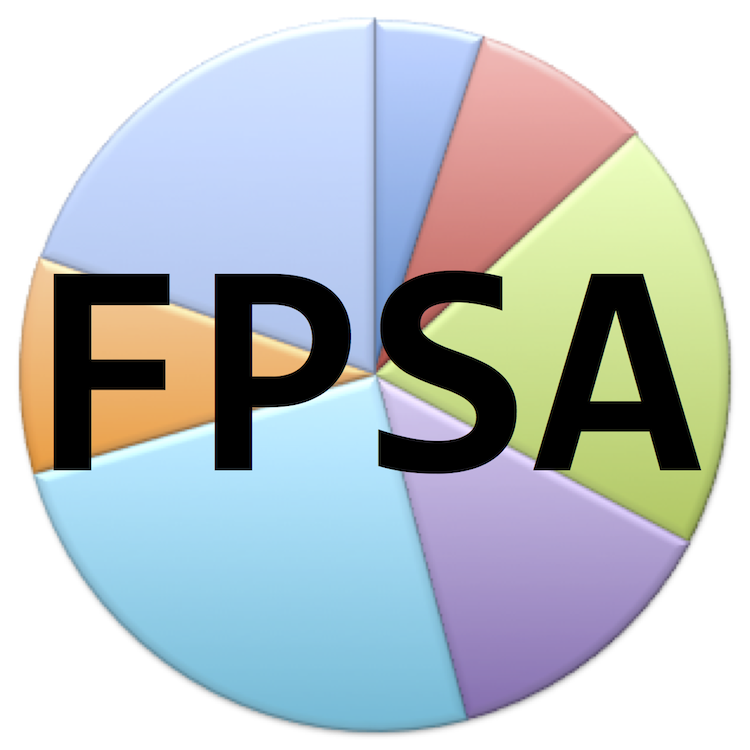
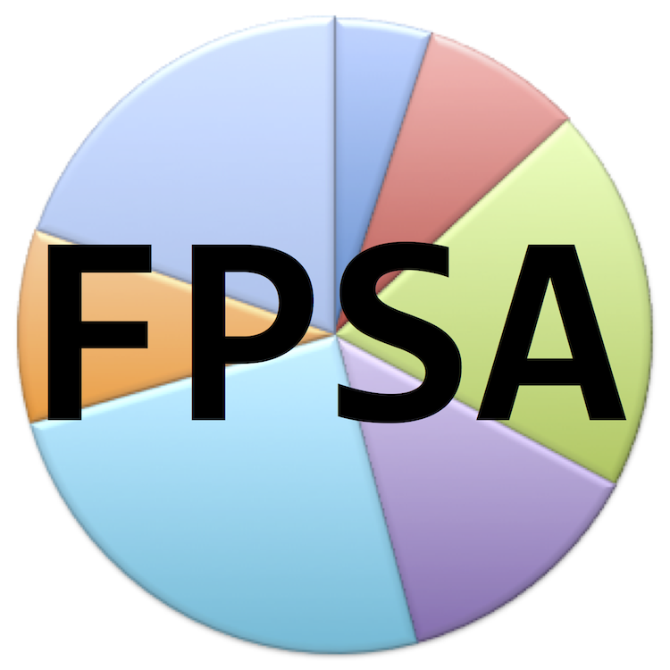

∞ ⋈ ∞ ∞ ⋈ ∞ ∞ ⋈ ∞ ∞ ⋈ ∞ ∞ ⋈ ∞ ∞ ⋈ ∞
Divided Party (DiP)
 

Divided Party will change its name on the next general meeting to include the words "Federal Party", because the meaning of divide, in English, does not have the same meaning, "verdeel" (divide) to "deel" (share) has in Afrikaans.
DiP's objective is to unite the left and right of politics in one party, against imperialism.
DiP develops the idea self-determination, an opposing idea to "Unity". Imperialist indoctrination about "Unity" made "Self" irrational. The fallaciousness is included in many theories. For a long time, "Unity" has been the dominant idea in politics. Real unity is more probable when minorities' and individuals' self-determination and wills are respected. Self-determination is relevant at all spheres of live, from considering the whole world to considering a single household. "Unity" is the force of globalism and monarchism. "Unity" is based on only the idea Truth. The idea Love, the root of social contract theory; not-doing evil to all others like selves do not want evil done to, did not develop in imperialist "Unity" to respect the idea self-determination. It caused despotism, which can be seen in the way people have been subjected to torture, disrespect, ostracism and wars, for "Unity".
The word Party implies unity. The word Divided, which implies self-determination, adds necessary balance to the name Divided Party.
Click here to go to DiP's website.